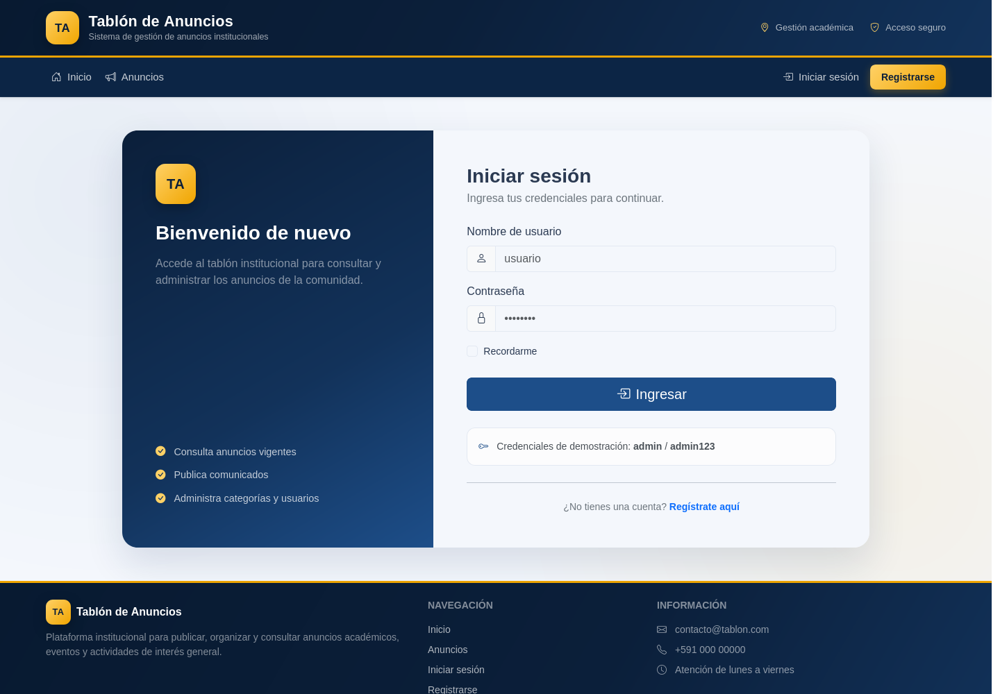
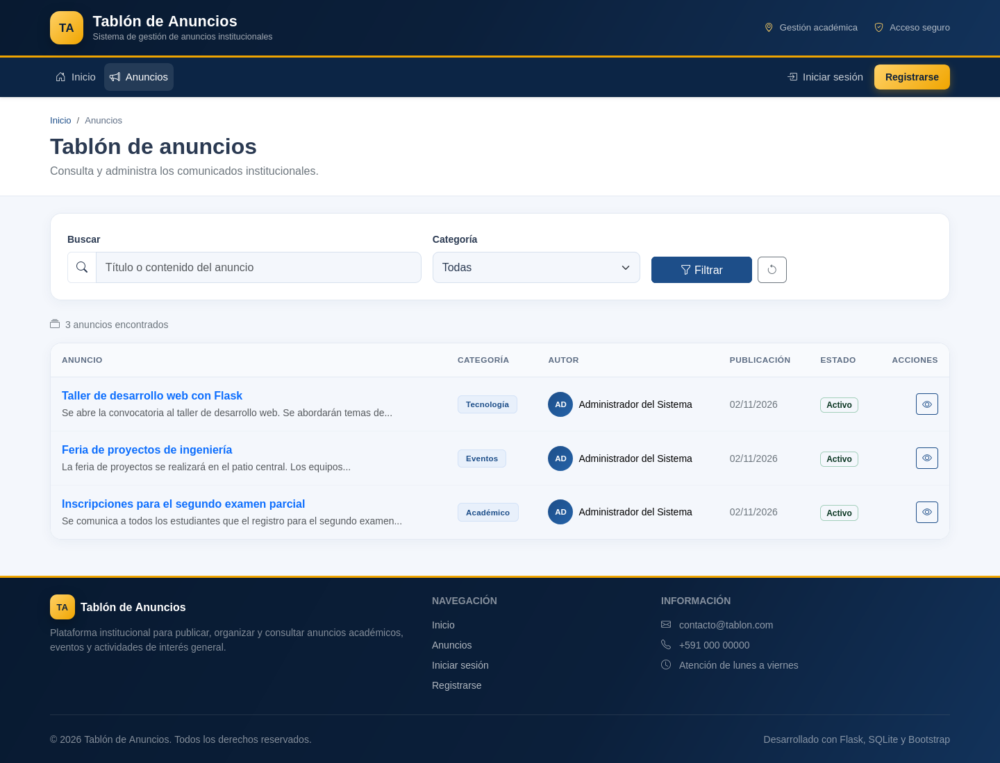
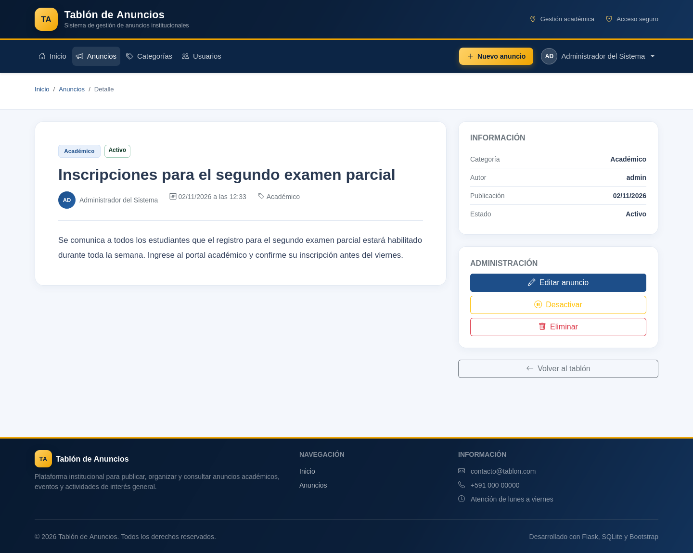
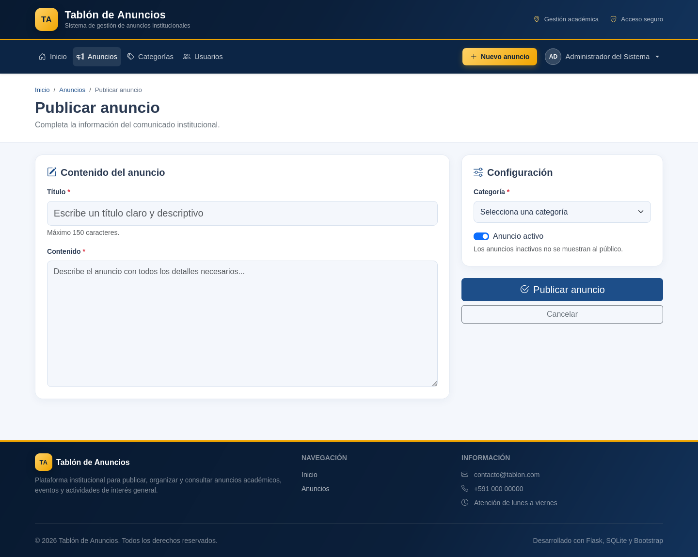
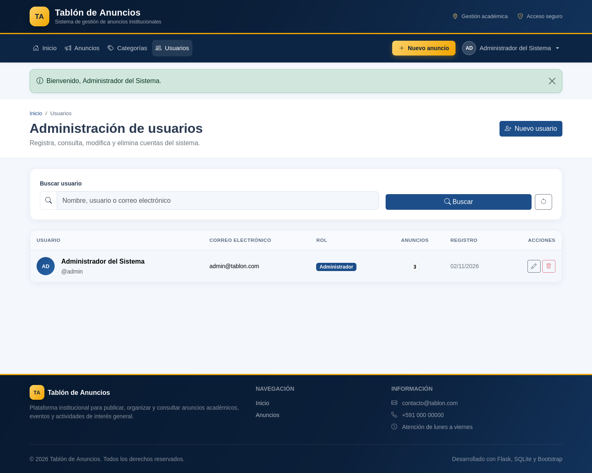
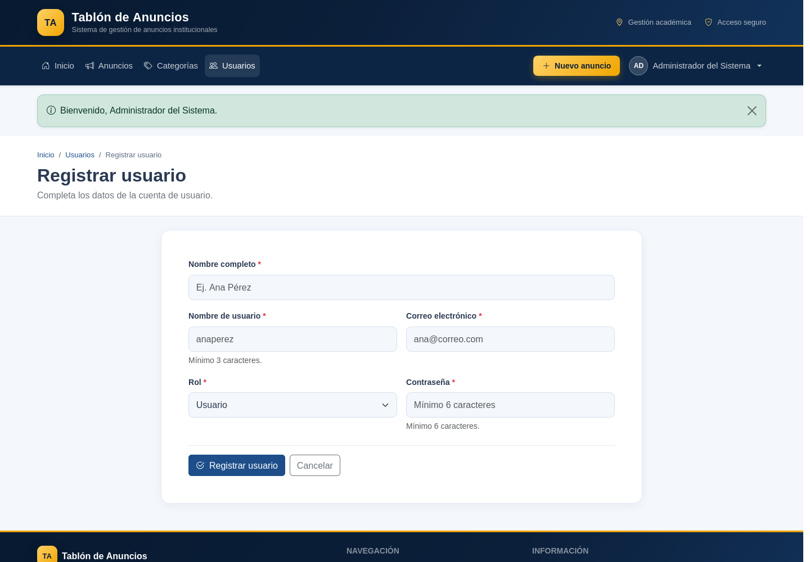
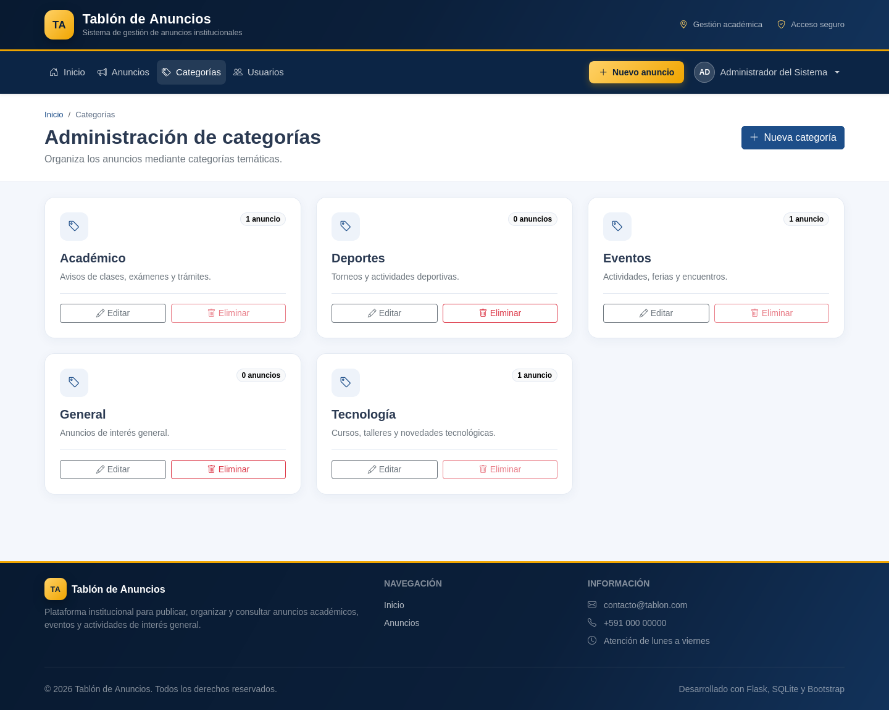
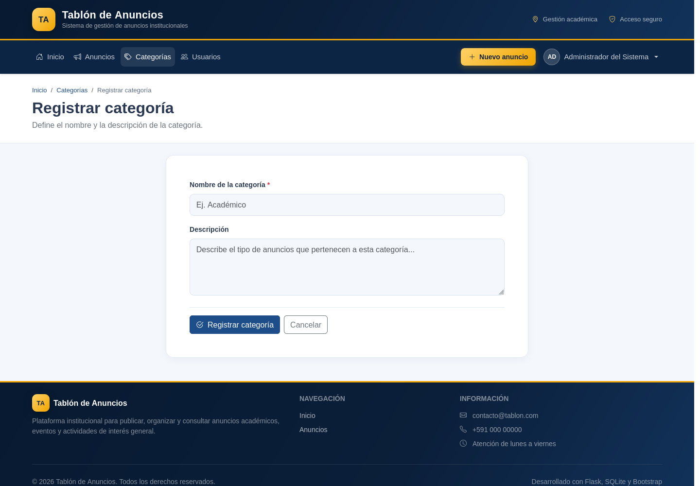

Desarrollo de una aplicación modular con Application Factory, Blueprints, base de datos SQLite e interfaz responsive con Bootstrap.
El presente documento describe la implementación de una aplicación web para gestionar un tablón de anuncios institucional. El sistema permite autenticar usuarios, administrar cuentas y categorías, y publicar anuncios asociados a un autor y a una categoría determinada.
La solución fue construida con el framework Flask bajo el patrón de diseño Application Factory. La función create_app() centraliza la configuración y el registro de extensiones, mientras que las rutas se organizan en Blueprints independientes para autenticación, página principal, usuarios, categorías y anuncios. La persistencia se realiza en una base de datos SQLite denominada bd_anuncios.
Desarrollar una aplicación web modular que permita gestionar un tablón de anuncios, aplicando autenticación, operaciones CRUD, relaciones entre entidades y una interfaz de usuario construida con un framework CSS.
bd_anuncios con claves primarias, claves foráneas y relaciones.| Componente | Tecnología | Uso dentro del proyecto |
|---|---|---|
| Lenguaje | Python 3.11+ | Desarrollo de la lógica del servidor y de los modelos de datos. |
| Framework web | Flask 3.1 | Enrutamiento, plantillas Jinja, sesiones y aplicación del patrón Application Factory. |
| Base de datos | SQLite | Almacenamiento relacional local en el archivo instance/bd_anuncios.db. |
| ORM | Flask-SQLAlchemy 3.1 | Definición de modelos, relaciones, consultas y creación de tablas. |
| Autenticación | Flask-Login | Gestión de sesiones, usuario actual y protección de rutas. |
| Seguridad | Werkzeug Security | Generación y verificación de hashes de contraseñas. |
| Interfaz | Bootstrap 5.3 | Grillas responsive, componentes, formularios, tablas, alertas y navegación. |
| Iconografía | Bootstrap Icons | Iconos de apoyo en menús, botones, tarjetas y estados. |
| Servidor de desarrollo | Werkzeug | Ejecución local de la aplicación con recarga automática. |
La aplicación se divide en capas: configuración (config.py), fábrica de la aplicación (app/__init__.py), extensiones compartidas (app/extensions.py), modelos de datos (app/models.py), reglas de acceso (app/decorators.py), Blueprints con las rutas y una carpeta de plantillas y recursos estáticos.
El patrón Application Factory encapsula la creación de la aplicación en la función create_app(). Esta función carga la configuración, inicializa las extensiones, registra los Blueprints, configura el cargador de usuarios, registra manejadores de errores y expone el comando flask init-db para inicializar la base de datos.
| Archivo o módulo | Responsabilidad |
|---|---|
app/__init__.py | Define create_app(), registra Blueprints, extensiones, manejadores de error y el comando de inicialización. |
app/extensions.py | Instancia SQLAlchemy y LoginManager sin asociarlos todavía a una aplicación concreta. |
app/models.py | Define los modelos Usuario, Categoria y Anuncio, junto con sus relaciones y métodos de seguridad. |
app/decorators.py | Implementa admin_required y la verificación de propietario o administrador. |
app/blueprints/auth | Inicio de sesión, registro público y cierre de sesión. |
app/blueprints/main | Página principal, estadísticas, búsqueda y últimos anuncios. |
app/blueprints/usuarios | CRUD de usuarios protegido para administradores. |
app/blueprints/categorias | CRUD de categorías protegido para administradores. |
app/blueprints/anuncios | CRUD de anuncios, filtros, paginación y cambio de estado. |
app/templates | Plantillas Jinja con herencia desde base.html. |
app/static/css/estilos.css | Identidad visual, componentes personalizados y ajustes responsive. |
Todas las páginas heredan de base.html, que define la cabecera institucional, el menú de navegación, el bloque de mensajes flash, el área de contenido y el pie de página. Las vistas particulares sobrescriben los bloques titulo, contenido y scripts.
La base de datos bd_anuncios está compuesta por tres tablas relacionadas. Un usuario puede publicar muchos anuncios y una categoría puede agrupar muchos anuncios. Cada anuncio pertenece obligatoriamente a un usuario y a una categoría.
| Columna | Tipo | Restricción | Descripción |
|---|---|---|---|
| id | INTEGER | PK, autoincremental | Identificador único del usuario. |
| nombre | VARCHAR(100) | NOT NULL | Nombre completo de la persona. |
| username | VARCHAR(50) | NOT NULL, UNIQUE | Nombre de usuario para iniciar sesión. |
| VARCHAR(120) | NOT NULL, UNIQUE | Correo electrónico de contacto. | |
| password_hash | VARCHAR(255) | NOT NULL | Hash de la contraseña; nunca se almacena texto plano. |
| rol | VARCHAR(20) | NOT NULL, default "usuario" | Rol admin o usuario. |
| fecha_registro | DATETIME | NOT NULL | Fecha y hora de creación de la cuenta. |
| Columna | Tipo | Restricción | Descripción |
|---|---|---|---|
| id | INTEGER | PK, autoincremental | Identificador único de la categoría. |
| nombre | VARCHAR(80) | NOT NULL, UNIQUE | Nombre temático de la categoría. |
| descripcion | VARCHAR(255) | NULL | Descripción del tipo de anuncios que agrupa. |
| fecha_creacion | DATETIME | NOT NULL | Fecha y hora de registro. |
| Columna | Tipo | Restricción | Descripción |
|---|---|---|---|
| id | INTEGER | PK, autoincremental | Identificador único del anuncio. |
| titulo | VARCHAR(150) | NOT NULL | Título descriptivo del comunicado. |
| contenido | TEXT | NOT NULL | Cuerpo completo del anuncio. |
| activo | BOOLEAN | NOT NULL, default true | Determina si el anuncio es visible al público. |
| fecha_publicacion | DATETIME | NOT NULL | Fecha y hora de publicación. |
| usuario_id | INTEGER | FK → usuarios.id | Autor del anuncio. |
| categoria_id | INTEGER | FK → categorias.id | Categoría a la que pertenece el anuncio. |
Tablon de anuncios/ ├── app/ │ ├── __init__.py │ ├── decorators.py │ ├── extensions.py │ ├── models.py │ ├── blueprints/ │ │ ├── auth/ │ │ ├── main/ │ │ ├── usuarios/ │ │ ├── categorias/ │ │ └── anuncios/ │ ├── static/ │ │ └── css/estilos.css │ └── templates/ │ ├── auth/ │ ├── usuarios/ │ ├── categorias/ │ ├── anuncios/ │ ├── errores/ │ └── base.html ├── database/schema.sql ├── docs/ │ └── capturas/ ├── instance/bd_anuncios.db ├── config.py ├── run.py ├── requirements.txt └── .flaskenv
La carpeta instance almacena la base de datos y no se versiona. El archivo database/schema.sql contiene el script DDL equivalente a los modelos, útil para documentar o recrear la estructura.
| N.º | Requerimiento | Implementación |
|---|---|---|
| 1 | Base de datos bd_anuncios | Tres tablas relacionadas con claves primarias y foráneas, definidas con SQLAlchemy y documentadas en schema.sql. |
| 2 | Autenticación | Formulario de inicio de sesión, verificación de hash, manejo de sesión con Flask-Login y cierre de sesión. |
| 3 | Página principal | Plantilla base con cabecera institucional, navegación, contenido y pie comunes; página de inicio con buscador y estadísticas. |
| 4 | Administración de usuarios | Listado con búsqueda, registro, edición, cambio de contraseña y eliminación protegida. |
| 5 | Administración de categorías | Listado en tarjetas, registro, edición y eliminación con validación de anuncios asociados. |
| 6 | Administración de anuncios | CRUD completo, asociación con categoría y autor, activación/desactivación, filtros y paginación. |
| 7 | Application Factory y Blueprints | create_app() registra cinco Blueprints y mantiene separadas las responsabilidades por módulo. |
Las siguientes capturas fueron obtenidas con la base de datos de demostración cargada mediante el comando flask init-db.

usuario.






| Método | Ruta | Acceso | Descripción |
|---|---|---|---|
| GET | / | Público | Página principal y buscador. |
| GET/POST | /auth/login | Público | Inicio de sesión. |
| GET/POST | /auth/registro | Público | Registro de nuevos usuarios. |
| GET | /auth/logout | Autenticado | Cierre de sesión. |
| GET | /anuncios/ | Público | Listado, búsqueda y filtros. |
| GET | /anuncios/<id> | Público | Detalle del anuncio. |
| GET/POST | /anuncios/nuevo | Autenticado | Publicación de anuncios. |
| GET/POST | /anuncios/<id>/editar | Autor o admin | Edición del anuncio. |
| POST | /anuncios/<id>/estado | Autor o admin | Activación o desactivación. |
| POST | /anuncios/<id>/eliminar | Autor o admin | Eliminación del anuncio. |
| GET | /categorias/ | Administrador | Listado de categorías. |
| GET/POST | /categorias/nueva | Administrador | Registro de categorías. |
| GET/POST | /categorias/<id>/editar | Administrador | Edición de categorías. |
| POST | /categorias/<id>/eliminar | Administrador | Eliminación de categorías. |
| GET | /usuarios/ | Administrador | Listado y búsqueda de usuarios. |
| GET/POST | /usuarios/nuevo | Administrador | Registro de usuarios. |
| GET/POST | /usuarios/<id>/editar | Administrador | Edición de usuarios. |
| POST | /usuarios/<id>/eliminar | Administrador | Eliminación de usuarios. |
generate_password_hash() y se verifican con check_password_hash().@login_required y los módulos administrativos emplean un decorador @admin_required.next del inicio de sesión se valida para aceptar únicamente rutas internas y evitar redirecciones externas.cd "Tablon de anuncios" python3 -m venv .venv source .venv/bin/activate pip install -r requirements.txt flask init-db flask run
La aplicación queda disponible en http://127.0.0.1:5000. El comando flask init-db crea las tablas, el usuario administrador, cinco categorías y tres anuncios de demostración.
| Rol | Usuario | Contraseña |
|---|---|---|
| Administrador | admin | admin123 |
| Usuario | Registro público | Definida por el usuario |
La aplicación cumple con los requerimientos de la actividad: implementa una base de datos relacional SQLite con tres entidades y sus relaciones, autenticación de usuarios, una interfaz común basada en Bootstrap y operaciones CRUD completas para usuarios, categorías y anuncios.
El uso del patrón Application Factory permitió separar la configuración de la creación de la aplicación, facilitando las pruebas y la incorporación de nuevas extensiones. La organización mediante Blueprints mantuvo las rutas agrupadas por dominio y redujo el acoplamiento entre módulos. Asimismo, la herencia de plantillas y la hoja de estilos personalizada proporcionaron una experiencia visual coherente y adaptable a distintos tamaños de pantalla.
Como trabajo futuro se pueden incorporar pruebas automatizadas con pytest, protección CSRF en los formularios, carga de imágenes para los anuncios, notificaciones por correo y un panel de reportes con estadísticas de publicación.